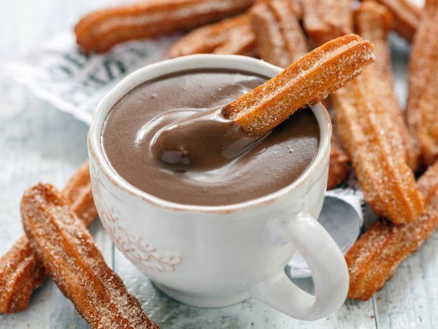
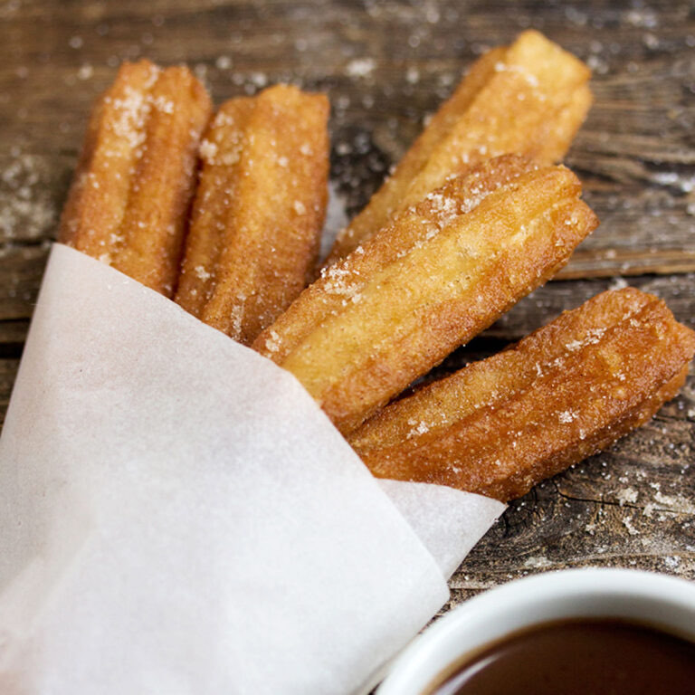
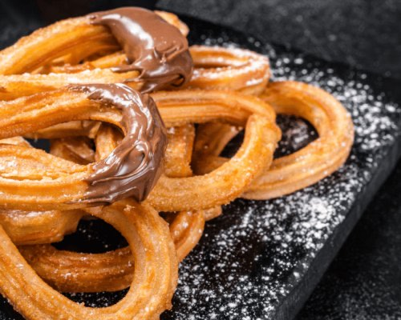
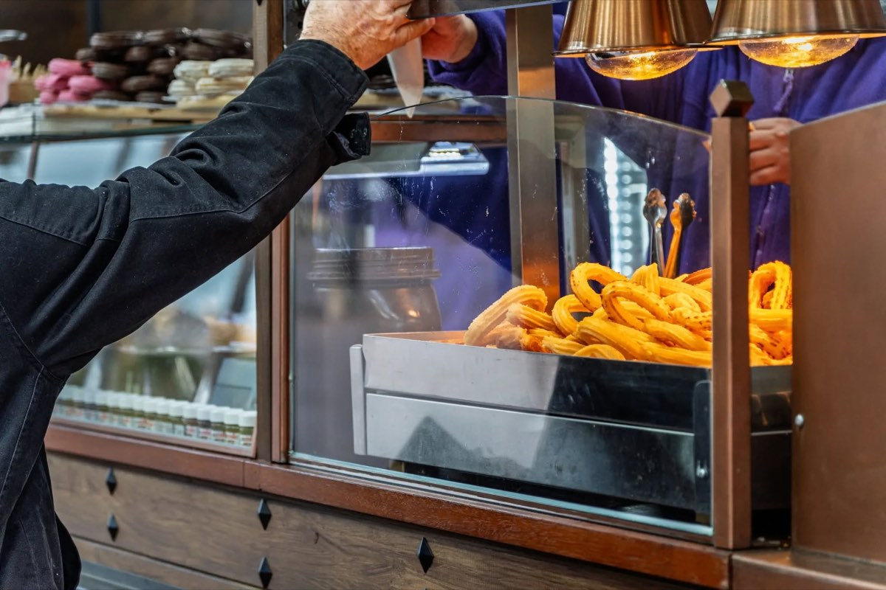

Co to vlastně je – a proč se z nich stal fenomén?
Churros con chocolate je na první pohled jednoduchá věc: čerstvě smažené tyčinky z těsta (churros) někdy lehce cukrované, a k tomu hustá horká čokoláda, do které se churro namáčí. Ne dezert v „cukrárenském" smyslu. Spíš rituál. Krátká pauza, horko v dlaních, cukr na prstech, těžká kakaovo-čokoládová vůně. Drobné štěstí, které se nedá úplně uspěchat.
Churros nikdy nebyly jen turistická atrakce. Ve Španělsku to dlouho byla zcela normální zimní věc: po trhu, po procházce, ale především po nočním životě, po divadle, diskotéce (mnohé churrerías měly otevřeno až do rána).
Jenže v posledních letech se churros con chocolate chovají jinak než dřív — ne jako „místní klasika", ale jako virální ikona.
Jak to poznáte i bez čísel? Fronty
V Barceloně jsou dnes chvíle, kdy před některými churrerías stojí dlouhé řady lidí — často mladí Asiaté, ale i místní. Nejde jen o chuť. Jde o „musím to mít": ochutnat, vyfotit, sdílet, potvrdit si místo třeba na Instagramu nebo TikToku.
Jedna známá katalánská churrería v gotické čtvrti se dokonce stala „poutním místem" poté, co ji navštívila a fotky z ní sdílela jedna světová popová hvězda — a příběh se začal šířit jako lavina. (Tady už nejsme v gastronomii, ale v sociologii.)
Když srovnáváme Madrid s Barcelonou, pořád platí, že hlavní město churros a místo s největší koncentrací churrerías je Madrid (řádově více než Barcelona). Ale Barcelona má jednu výhodu navíc: je turistická megascéna, kde se z jídla snadno stane obsah.
Proč je to tak španělské – a zároveň tak světové?
Churros jsou archetypem prostého jídla: mouka, voda, sůl, olej. Vznikly někde v prostoru každodennosti, kde nejde o noblesu, ale o teplo, energii a jednoduchost. Odpovídá tomu i jejich povaha: churro je nejchutnější v prvních minutách po usmažení. Je to jídlo přítomného okamžiku. Není to dort na zítřek. Je to teď. 😊
Odkud se vlastně churros vzaly?
Přes všechnu jejich dnešní slávu je na churros něco překvapivého: nevíme přesně kde a kdy vznikly. Churros nejsou jídlo dvora ani kuchařských knih. Jsou jídlo praktické, anonymní a každodenní — a právě taková jídla se v dějinách špatně dokumentují.
Pastýřská teorie – jídlo mimo město
Jedna z nejčastěji uváděných teorií spojuje původ churros s pastýři ve vnitrozemí Španělska, často se zmiňuje oblast dnešní Kastilie. Logika je jednoduchá:
- mouka, voda a sůl jsou suroviny, které byly dostupné i mimo města,
- těsto se dá připravit bez pece,
- smažení je rychlé a účinné.
Někteří autoři dokonce spojují název churro s tvarem rohů místního plemene ovcí churra. Jistotu nemáme, ale symbolicky to dává smysl: churro jako jídlo lidí, kteří žijí mimo centra moci a kultury.
Zároveň se tahle teorie dnes bere s rezervou — hlavně kvůli otázce, zda bylo smažení v oleji v horských podmínkách opravdu tak praktické. Ale jako kulturní vysvětlení (ne nutně doslovné) funguje velmi dobře.
Městská realita: pouliční jídlo
Co už doložené máme lépe, je přítomnost churros ve španělských městech nejpozději v 17. století. Objevují se na dobových vyobrazeních Madridu, v kontextu tržišť a pouličního prodeje. Ne jako slavnostní jídlo, ale jako něco, co se kupuje cestou, za pár drobných, rychle a bez okázalosti.
A tady je důležitý moment: churros se nestaly „národní klasikou" proto, že by byly výjimečné, ale proto, že byly opakované, spolehlivé a dostupné.
Asijská stopa? Čínská inspirace přes Portugalsko
Další — a velmi fascinující — teorie posouvá původ ještě dál. Někteří historici gastronomie poukazují na podobnost churros s čínským smaženým těstem youtiao, které bylo v Asii známé dávno předtím, než se churros objevily v Evropě.
Myšlenka zní: portugalští obchodníci, kteří se v 16. století pohybovali v Asii, mohli tento typ jídla poznat a přenést do Evropy. Na Iberském poloostrově se pak recept přizpůsobil místním chutím i technikám — například použití hvězdicové trysky, která dává churros jejich typický tvar.
Ani tady ovšem neexistuje definitivní důkaz.
Do toho nám háže vidle čokoláda
Na konci 15. a především v 16. století se ve Španělsku pěstovalo spousta nových plodin. Plodin, které do té doby Evropa neznala, jako například brambory a rajčata. Ano, byly to plodiny z „Východní Indie", jak původně nazvali Španělé to, co v r. 1492 objevil. S Kolumbem přišla do Evropy i čokoláda.
Ta, na rozdíl od toho, jak ji byli zvyklí požívat původní obyvatelé střední a jižní Ameriky, v Evropě čekala dlouho, než se stala „lidovým" nápojem. Čokoláda byla zprvu nápoj moci: drahá, vzácná, obestřená tajemstvím, patřící do klášterů, na královské dvory, do prostředí, kde se o jídle přemýšlí jako o léku, posilující substanci nebo společenském rituálu vyšších vrstev.
A tady vzniká paradox, který je pro churros con chocolate úplně zásadní:
Španělsko přivezlo kakao do Evropy, ale trvalo staletí, než se čokoláda „potkala" s churros.
Ne proto, že by Španělé neměli nápad. Proto, že společnost ještě nebyla připravená, aby se luxus setkal s ulicí.
Jak vznikla ta slavná dvojka (a proč tak pozdě)
Když se podíváte na dějiny jídla, často zjistíte, že největší inovace nevznikají v kuchyni, ale v ekonomice, logistice a městském životě.
Teprve v 19. století se postupně mění několik věcí najednou:
- roste městská kultura a noční život,
- rozvíjejí se podniky typu chocolaterías,
- suroviny se zlevňují a zjednodušuje se zásobování,
- sladké přestává být jen výsadou a stává se dostupným potěšením.
A tehdy se zrodí to, co dnes považujeme za „odjakživa": churros jako rychlé, levné, horké sousto plus hustá čokoláda jako dostupný nápoj — dokonalý pár.
V Madridu se z toho stává městský rituál: po divadle, po flámu, po dlouhé noci — čokoláda s churros jako teplá tečka, návrat k tělu, k zemi, k realitě.
Co z toho plyne?
Ať už churros vznikly u pastýřů, na městských trzích nebo jako adaptace cizí inspirace, vždycky šlo o totéž: jídlo, které má zahnat hlad, zahřát a potěšit. Bez ambice být „vysokou kuchyní". A právě proto je zajímavé, že se z něčeho tak prostého stala časem kulturní ikona, která patří k nočnímu životu nejen Madridu a velkých španělských měst, ale také široko za oceánem (v Latinské Americe a v USA); na kterou se stojí v dlouhých frontách v Barceloně a která se objevuje na sociálních sítích všeho druhu po celém světě.
Kam na churros con chocolate v Barceloně? (Top 5)
- Xurreria Manuel San Román — Carrer dels Banys Nous, 8
- Granja Dulcinea — Carrer de Petritxol, 2
- La Pallaresa Xocolateria — Carrer de Petritxol, 11
- Xurreria Laietana — Via Laietana, 46
- Xurreria Trébol — Carrer de Còrsega, 341 (Gràcia)




